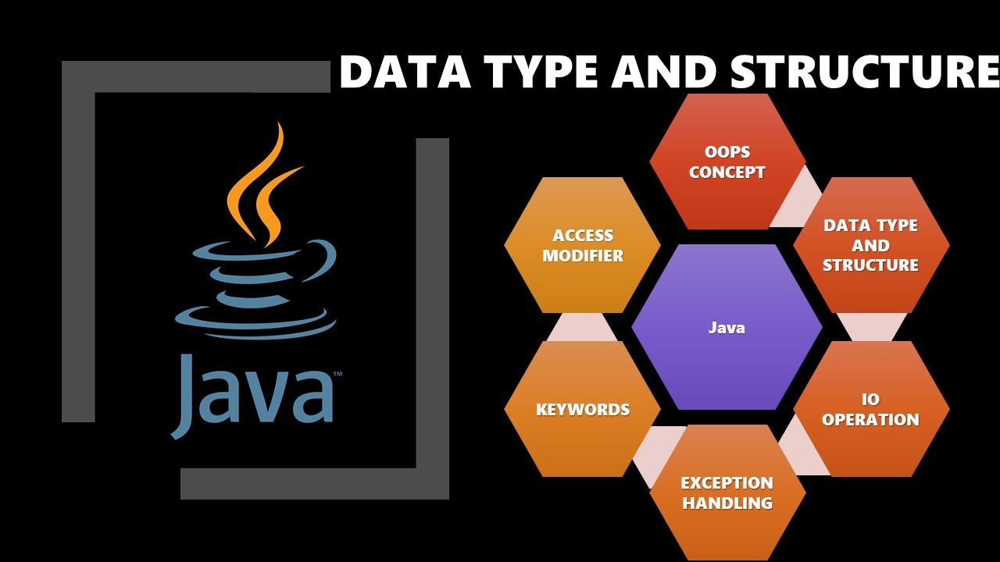

Here will find acritical about core java concepts, explain with simple examples and mostly covered below topics (OOPS Concepts, data type, Collections, IO operation, exceptions , Final, static, Super Keywords, Access Modifier and Exception Handling)
This Acritical describe about java OOPs concepts (Object, Class, Inheritance, Encapsulation, Polymorphism (Runtime, compile time), Abstraction (Abstract Class and Interface)) with simple example.

This Acritical describe about Java Design Patterns with simple example.

This Acritical describe about Java Reflection with simple example.

This Acritical describe about java data type (Primitive / Non-primitive data types) and collections (List, Set, Map and table) with simple example
This Acritical describe about Java IO operation read/write from property file, text, excel and SQL with simple example
This Acritical describe about Java checked and unchecked exceptions and create own checked and unchecked exception with simple example.
This Acritical describe about Java static, final and super keyword with simple example.
This Acritical describe about Java access modifier with simple example.